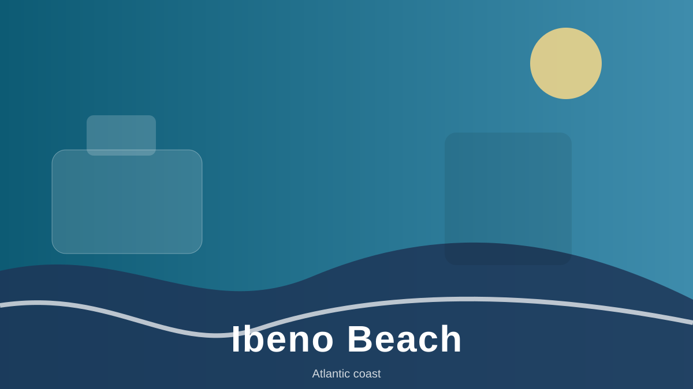
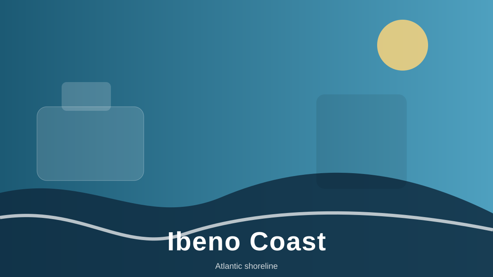
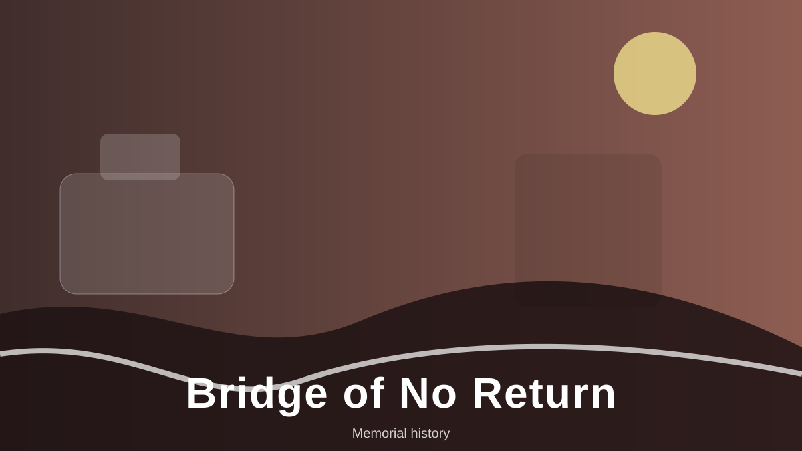
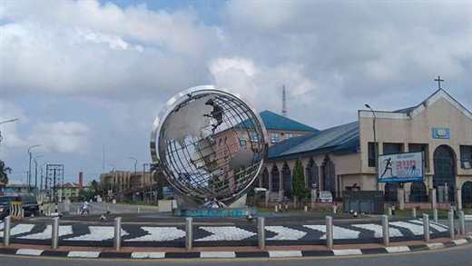

Coast
Ibeno shoreline
Leave room for the sea, the sky and local advice about coastal conditions.
Coast · culture · community
From Atlantic shorelines and living markets to stories held in museums and memorials, make space for a journey shaped by the people and places of this Nigerian state.

A little context
Akwa Ibom lies in Nigeria's south-east, along the Gulf of Guinea. Its communities, languages, faith traditions and coastal setting give visitors more than one story to encounter. This independent guide brings together visitor ideas and practical prompts; it is not an official tourism service.
The supplied tourism report points to a varied trip: city landmarks in Uyo, coastal places such as Ibeno, regional history, markets and local food. Distances can be significant, so plan travel time, ask locally about access, and check weather before setting out.
Start with a few ideas

Coast
Leave room for the sea, the sky and local advice about coastal conditions.

History
Learn about historic places with care for the people and memories they represent.

City life
Take time to explore city landmarks, local food traditions and the rhythm of the capital.
Travel thoughtfully
Uyo is a practical base for some visits, but coastal and heritage sites require advance route planning. Confirm transport and road conditions locally.
Rainfall and local events can affect outdoor plans. Check a current forecast and confirm venue schedules close to your travel dates.
Compare accommodation in Uyo and near your intended destination. Verify location, availability, services and cancellation terms with the provider.
More than a checklist
Ibibio, Annang and Oron communities and their histories are part of the state's rich cultural context. Approach heritage sites with curiosity and respect.
Afang soup, Edikang Ikong and Ekpang Nkukwo are among the regional dishes visitors may encounter. Ask about ingredients, preparation and spice before ordering.
Rain can change outdoor plans, and inter-city journeys need time. Check a current forecast, road conditions and transport availability rather than relying on old schedules or prices.
The coast, city, food and heritage offer different ways to experience the state. Build in flexibility: local guidance and current access information matter as much as the itinerary.
Make it your trip
Build a shortlist, review a sample itinerary and send yourself a copy of your travel interests.